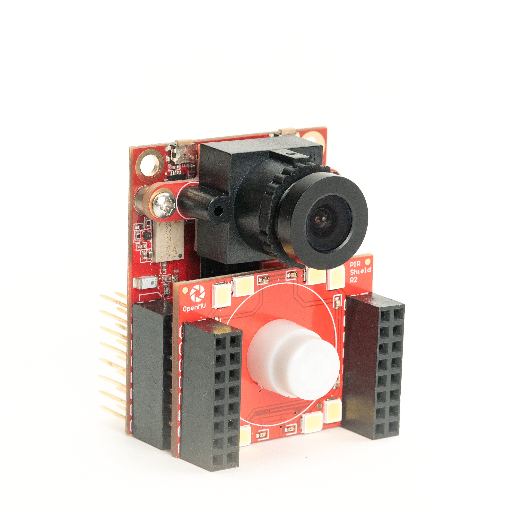
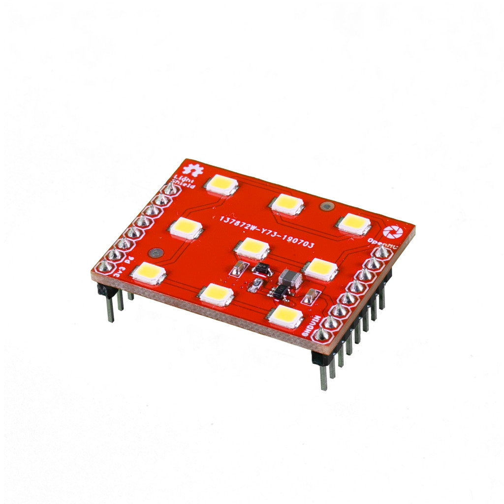

OpenMV 쉴드¶
네트워킹, 모터 제어, 디스플레이, 센서 등으로 OpenMV Cam을 확장하기 위해 꽂는 애드온 보드입니다. 각 페이지는 쉴드의 기능, 주요 사양, 그리고 MicroPython에서 이를 구동하는 API를 다룹니다.
최신 쉴드¶

Gigabit PoE Shield
더 높은 대역폭 스트리밍을 위한 PoE 지원 기가비트 이더넷.
탐색 →
Servo Shield
카메라 전원 공급 중 최대 5A를 사용하는 서보 4개 구동, 6–36V 입력.
탐색 →
Battery Shield
DC 배럴 잭을 통한 1.8–5.5V 배터리 입력, 6–36V 광범위 입력.
탐색 →
Touch LCD Shield
정전식 멀티터치와 Qwiic을 갖춘 2.3" 320×240 SPI LCD.
탐색 →
PoE Shield
Power-over-Ethernet 지원 10/100 이더넷.
탐색 →
PIR Shield
6µA 대기 동작 감지 트리거, 백색 및 850 nm IR 조명.
탐색 →
CAN/RS232 Shield
차량 및 레거시 시리얼을 위한 8 Mb/s CAN-FD와 1 Mb/s RS-232.
탐색 →
RS422/RS485 Shield
장거리 산업용 버스를 위한 10 Mb/s 차동 시리얼.
탐색 →
Driver Shield
이중 3A 모터 드라이버 또는 4중 1.5A 라인 드라이버, 6–36V.
탐색 →
Relay Shield
AC/DC 부하 스위칭을 위한 60W 이중 릴레이, 6–36V 입력.
탐색 →AE3 액세서리¶

레거시 쉴드¶

LCD Shield
독립형 미리보기를 위한 1.8" 128×160 SPI TFT.
탐색 →
WiFi Shield
온보드 네트워킹이 없는 OpenMV Cam을 위한 2.4 GHz Wi-Fi.
탐색 →
Proto Shield
3.3V와 GND 레일이 있는 10×10 관통 홀 프로토타이핑 영역.
탐색 →
Motor Shield
배터리 전원용 5V 레귤레이터가 있는 TB6612FNG 이중 채널 H-브리지 드라이버.
탐색 →
Pan and Tilt Shield
카메라와 서보에 전원을 공급하는 5V 레귤레이터가 있는 서보 3채널.
탐색 →
TV Shield
VS23S010 SPI-NTSC 칩을 통한 352×240 NTSC 아날로그 비디오 출력.
탐색 →
Wireless TV Shield
5.8 GHz 아날로그 FPV 송신기가 내장된 NTSC 비디오 출력.
탐색 →
QWIIC Shield
데이지 체인 I2C 주변 장치를 위한 Qwiic JST-SH 커넥터 2개.
탐색 →
Light Shield
TPS61169 드라이버와 DAC/PWM 디밍이 있는 9개 고출력 백색 LED.
탐색 →
Servo Shield
I2C를 통한 8채널 PCA9685 서보/PWM 컨트롤러.
탐색 →
CAN Shield
DB9 커넥터와 12V 레귤레이터가 있는 1 Mb/s CAN 버스.
탐색 →
Thermopile Shield
픽셀당 온도를 측정하는 16×4 열전기 센서 배열.
탐색 →